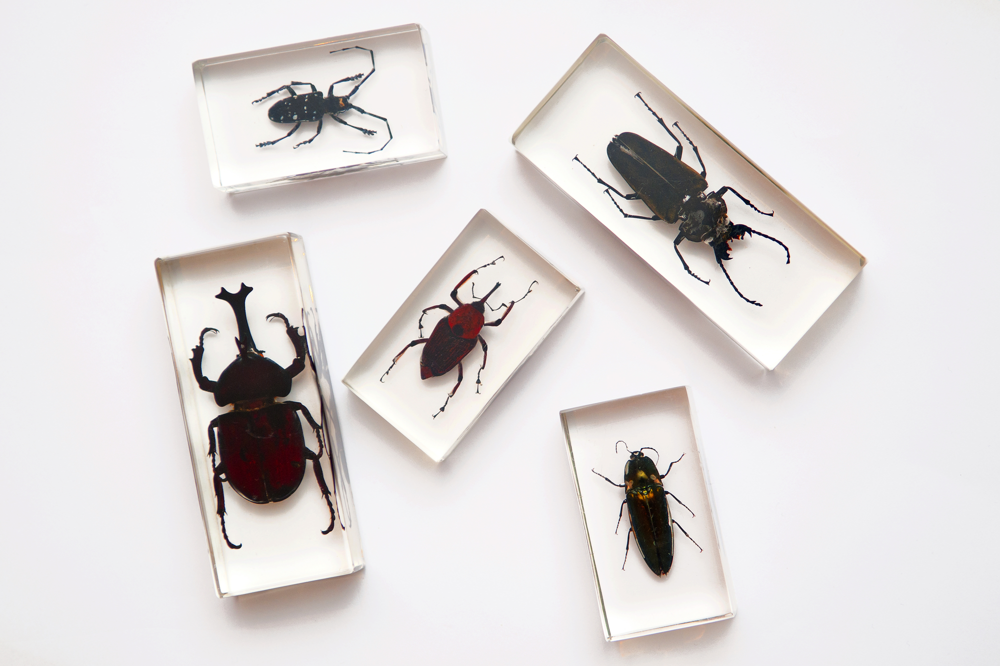
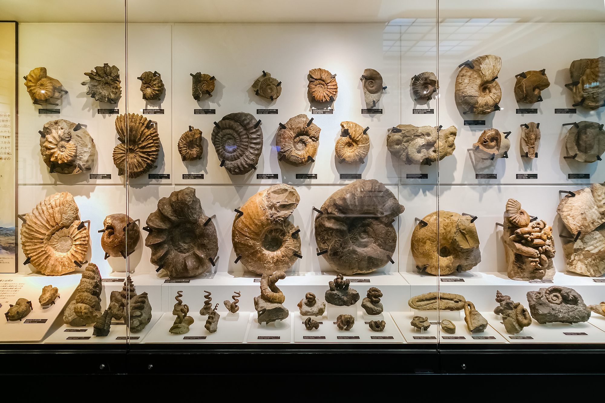
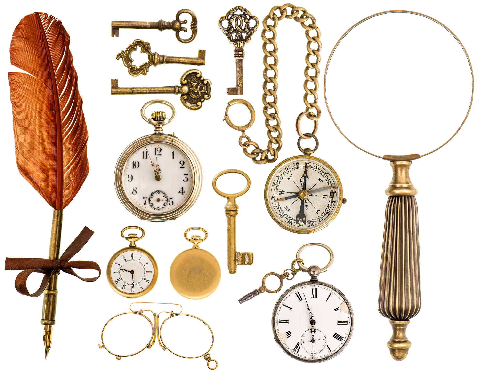

Support
There are various ways you can support the museum. Donations are very welcome and are an important way we keep this museum open and accessible to the whole community.



You can also support us by donating items of interest to the museum's collections.
If you have some item or collection that you think others would enjoy, please let us know by contacting our Collections Department at collections@cs-museum.com and they will be able to assist you.